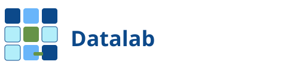
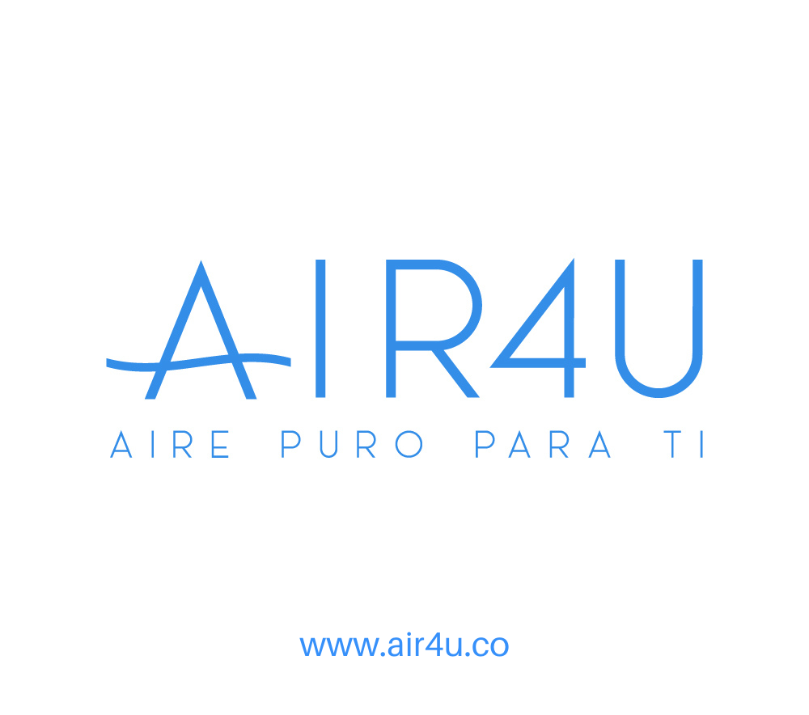
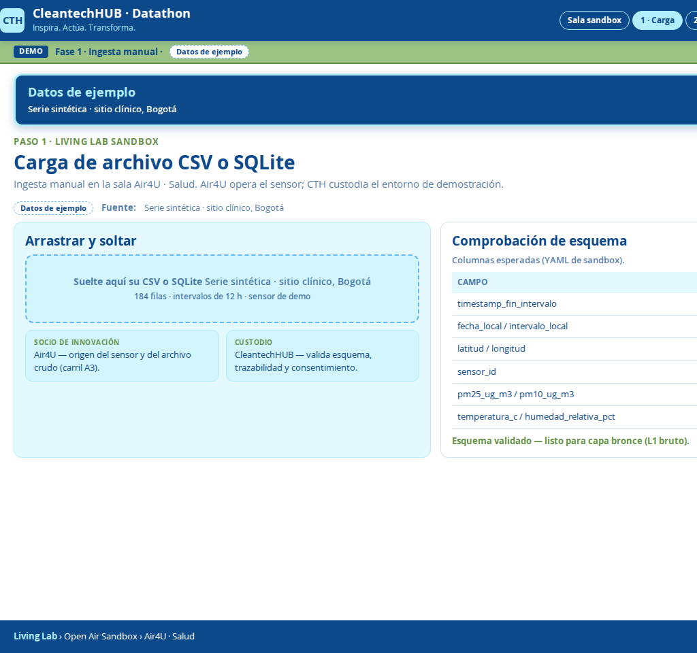
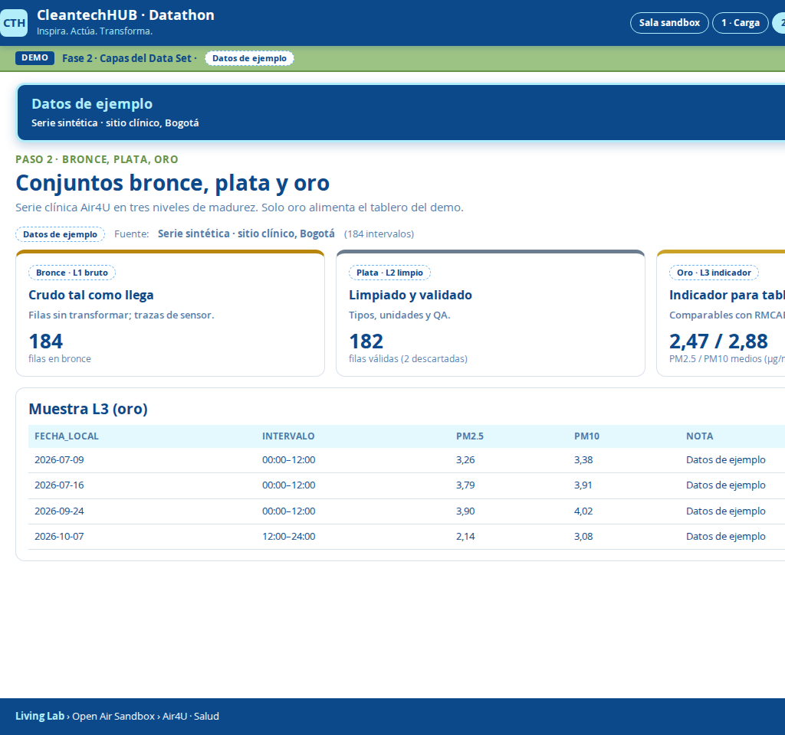
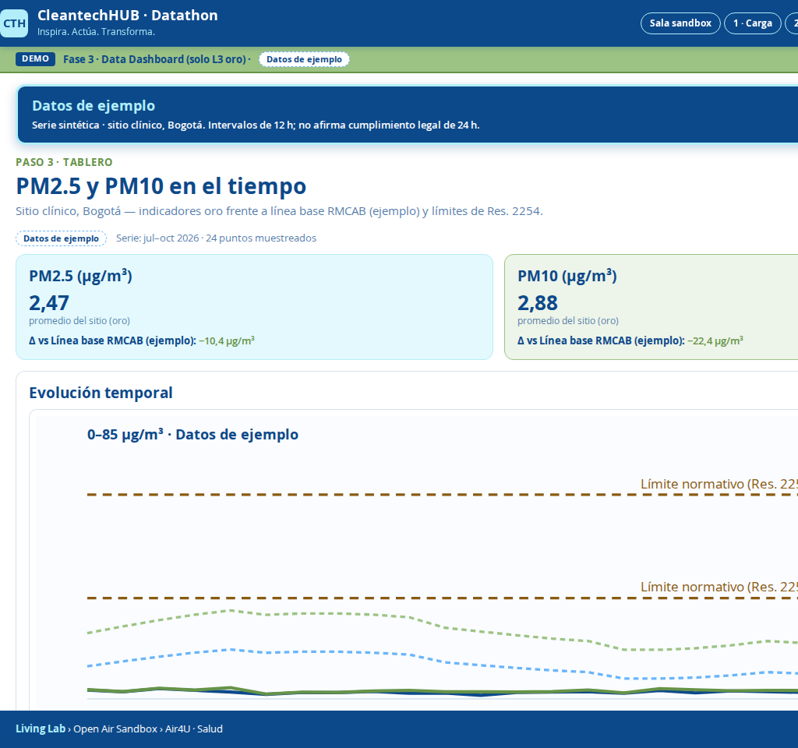
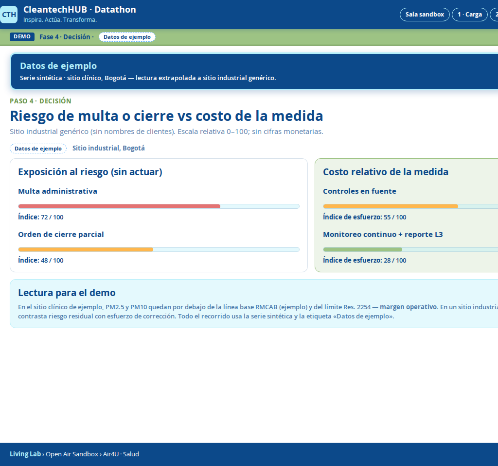

Modelo steward
El steward custodia el sandbox, define acceso y trazabilidad. Los socios aportan casos y datos permitidos sin ceder soberanía sobre lo sensible.

powered by CleantechHUB
Consorcio abierto · Datalab
Modelo steward con datos y herramientas compartidos bajo reglas claras. Datalab es el motor bajo la lente Tecnológica del Observatorio de la Tierra en la Universidad Externado de Colombia.
El steward custodia el sandbox, define acceso y trazabilidad. Los socios aportan casos y datos permitidos sin ceder soberanía sobre lo sensible.
Infraestructura, entornos de prueba y gobernanza técnica para pasar de exploración a decisiones con co-branding Datalab powered by CleantechHUB.
Clean Air for Health Sandbox · Sandbox Aire Limpio para la Salud
Primer caso activo: calidad del aire, cargas de datos y tableros de riesgo para salud pública y equipos técnicos.

Air4U - Sandbox Aire Limpio para la Salud CTH - Infraestructura de datos, acceso y trazabilidad
CTH - Infraestructura de datos, acceso y trazabilidad
powered by CleantechHUB
Open Air Sandbox conecta sensores, datos abiertos y equipos multidisciplinarios. Vistas del entorno Datalab con datos de ejemplo donde aplique.




Entorno Datalab, datos demo